Open Composer Application Creation Manual
1. Introduction
- Enter the directory name to store all applications in
apps_dirin./conf.yml.erb. Here, set it toapps_dir: ./apps. - Create an application directory in
./apps. If the application name istest, create./apps/test. - Create the application description file
manifest.ymland the web form configuration fileform.ymlinside./apps/test. If you want to create them in Embedded Ruby format, name the filesmanifest.yml.erbandform.yml.erbinstead.
1.1. manifest.yml
Describes your application. Here is a sample:
name: Gaussian
category: Quantum Chemistry
icon: icon.png
description: |
[Gaussian](https://gaussian.com) is a general purpose computational chemistry software package.
related_apps:
OVITO:
icon: ovito.png
GrADS:
icon: bi-airplane-fill
ImageJ:
- name: Application name (If this key is omitted, the directory name is used instead)
- category：Category name
- icon: Path to image file for icon. URL, Bootstrap icon, or Font Awesome icon is also possible. For Bootstrap icons, write
icon: bi-airplane-fill. For Font Awesome icons, writeicon: fa-solid fa-gear. - description: Description of the application
- related_apps: Specify an application registered in Open OnDemand. The specified application is displayed on the history page. As with
icon:, you can specify icon images, etc. If no image is specified, the image registered in Open OnDemand is used.
1.2. form.yml
The form.yml is composed of five main sections: form, script, header, check and submit.
The form and script sections are required fields, but header, check and submit sections can be omitted.
The following figure shows the scope of form, script, and header sections.
A job script is generated from form, script, and header sections.
However, the header section is optional, and if omitted, ./lib/header.yml.erb is used instead.
Thus, in most cases, there is no need to define header.
Note that the application name in the upper left is the scope of manifest.yml.
The check section performs validation of the inputs before job submission.
The submit section defines the pre-processing when submitting a job.
2. Description of widget
In the form.yml, the form and header sections use the following widgets to generate the job script.
- number widget: Displays a numeric input field.
- text widget: Displays a text input field.
- email widget: Displays an email input field.
- select widget: Displays a dropdown menu.
- multi_select: Displays an input field where multiple items can be selected.
- radio widget: Displays radio buttons.
- checkbox widget: Displays checkboxes.
- path widget: Displays an input field for path of a file or directory on the Open OnDemand server.
2.1. number widget
Displays a numeric input field.
In the example below, nodes is the variable name for the widget.
The label is the displayed name,
value is the default value,
min and max set the range, and step determines the increment.
The required key specifies whether the input is mandatory, and help provides a tooltip below the input field.
The script section specifies how the input value will appear in the job script.
The #{nodes} in the script section will be replaced with the input value.
form:
nodes:
widget: number
label: Number of nodes (1 - 128)
value: 4
min: 1
max: 128
step: 1
required: false
help: The larger the number, the longer the wait time.
script: |
#SBATCH --nodes=#{nodes}
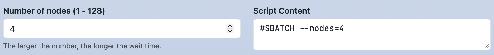
You can also display multiple numeric input fields in a single line.
For example, specifying size indicates the number of input fields, with each item defined as an array.
In the script section, #{time_1} and #{time_2} will be replaced with the respective values entered in the fields.
form:
time:
widget: number
label: [ Maximum run time (0 - 24 h), Maximum run time (0 - 59 m) ]
size: 2
value: [ 1, 0 ]
min: [ 0, 0 ]
max: [ 24, 59 ]
step: [ 1, 1 ]
script: |
#SBATCH --time=#{time_1}:#{time_2}:00
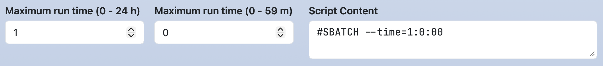
If label is not an array, a single-line label can be provided. The same applies to help.
form:
time:
widget: number
label: Maximum run time (0 - 24 h, 0 - 59 m)
size: 2
value: [ 1, 0 ]
min: [ 0, 0 ]
max: [ 24, 59 ]
step: [ 1, 1 ]

You can also write a label for each item and a long label on one line. Write the long label as the first element of the array format, and write the second element in array format.
form:
time:
widget: number
label: [ Maximum run time, [0 - 24 h, 0 - 59 m] ]
size: 2
value: [ 1, 0 ]
min: [ 0, 0 ]
max: [ 24, 59 ]
step: [ 1, 1 ]

2.2. text widget
Displays a text input field.
form:
comment:
widget: text
label: Comment
value: test
script: |
#SBATCH --comment=#{comment}
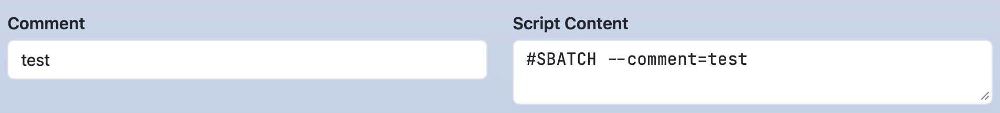
You can also display multiple text input fields in a single line.
form:
option:
widget: text
label: [ option, argument ]
value: [ --comment=, test ]
size: 2
script: |
#SBATCH #{option_1}#{option_2}

2.3. email widget
Displays an email input field.
Similar to the text widget, but validates the input to ensure it follows the email format when the "Submit" button is clicked.
form:
email:
widget: email
label: Email
script: |
#SBATCH --mail-user=#{email}
2.4. select widget
Displays a dropdown menu.
The options key specifies the choices as an array.
Each option's first element is the display name in the dropdown.
In the script section, #{partition} is replaced with the second element of the selected option.
form:
partition:
widget: select
label: Partition
value: Large Queue
options:
- [ Small Queue, small ]
- [ Large Queue, large ]
script: |
#SBATCH --partition=#{partition}
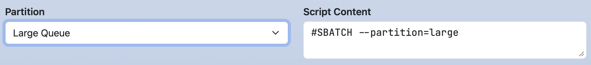
For multi-dimensional values,
options can use an array for the second element.
In this example, #{package_1} and #{package_2} are replaced with the respective first and second values of the selected array.
This format is also available for the multi_select, radio and checkbox widgets.
form:
package:
widget: select
label: Select package
options:
- [ A, [packageA, a.out] ]
- [ B, [packageB, b.out] ]
script: |
module load #{package_1}
mpiexec #{package_2}
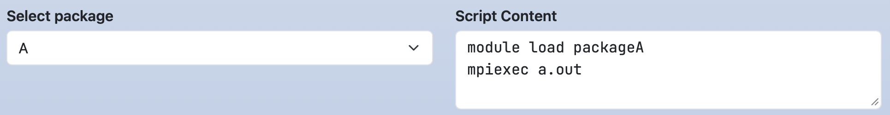
2.5. multi_select widget
Displays an input field where multiple items can be selected.
The options key specifies the available choices.
form:
load_modules:
widget: multi_select
label: Add modules
value: mpi/mpich-x86_64
options:
- [ mpi/mpich-x86_64, mpi/mpich-x86_64 ]
- [ mpi/openmpi-x86_64, mpi/openmpi-x86_64 ]
- [ nvhpc/24.3, nvhpc/24.3 ]
- [ nvhpc/24.5, nvhpc/24.5 ]
- [ nvhpc/24.7, nvhpc/24.7 ]
script: |
module load #{load_modules}
If mpi/mpich-x86_64 and nvhpc/24.7 are selected, the job script will display them on separate lines:
To display selected items in a single line, set the separator key with a delimiter.
form:
load_modules:
widget: multi_select
label: Add modules
value: mpi/mpich-x86_64
separator: " "
options:
- [ mpi/mpich-x86_64, mpi/mpich-x86_64 ]
- [ mpi/openmpi-x86_64, mpi/openmpi-x86_64 ]
- [ nvhpc/24.3, nvhpc/24.3 ]
- [ nvhpc/24.5, nvhpc/24.5 ]
- [ nvhpc/24.7, nvhpc/24.7 ]
script: |
module load #{load_modules}
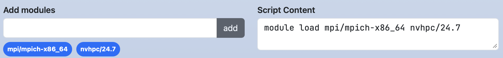
Multiple default values can also be set using an array format.
form:
load_modules:
widget: multi_select
label: Add modules
value: [ mpi/mpich-x86_64, nvhpc/24.7 ]
options:
- [ mpi/mpich-x86_64, mpi/mpich-x86_64 ]
- [ mpi/openmpi-x86_64, mpi/openmpi-x86_64 ]
- [ nvhpc/24.3, nvhpc/24.3 ]
- [ nvhpc/24.5, nvhpc/24.5 ]
- [ nvhpc/24.7, nvhpc/24.7 ]
2.6. radio widget
Displays radio buttons.
It is similar to the select widget,
but the direction key can specify the button layout.
Setting direction: horizontal arranges the buttons horizontally,
while omitting it defaults to a vertical layout.
form:
jupyter:
widget: radio
label: Jupyter
direction: horizontal
value: Jupyter Lab
options:
- [ Jupyter Lab, jupyterlab ]
- [ Jupyter Notebook, jupyter ]
script: |
module load #{jupyter}

form:
jupyter:
widget: radio
label: Jupyter
value: Jupyter Lab
options:
- [ Jupyter Lab, jupyterlab ]
- [ Jupyter Notebook, jupyter ]
script: |
module load #{jupyter}

2.7. checkbox widget
Displays checkboxes. If you set required in array format as follows, it will set whether each item is required.
form:
mail_option:
label: Mail option
widget: checkbox
direction: horizontal
value: [ Fail of job, When the job is requeued ]
required: [ true, false, true, false, false ]
options:
- [ Beginning of job execution, BEGIN ]
- [ End of job execution, END ]
- [ Fail of job, FAIL ]
- [ When the job is requeued, REQUEUE ]
- [ All, ALL ]
script: |
#SBATCH --mail-type=#{mail_option}

When required is a single boolean value (e.g., true), at least one checkbox must be selected before submission.
form:
mail_option:
label: Mail option
widget: checkbox
direction: horizontal
value: [ Fail of job, When the job is requeued ]
required: true
options:
- [ Beginning of job execution, BEGIN ]
- [ End of job execution, END ]
- [ Fail of job, FAIL ]
- [ When the job is requeued, REQUEUE ]
- [ All, ALL ]
script: |
#SBATCH --mail-type=#{mail_option}

You can set the separator similar to the multi_select widget, and you can set the direction similar to the radio widget.
2.8. path widget
Displays an input field for path of a file or directory on the Open OnDemand server.
The show_files key toggles whether files are displayed (default: true).
The favorites key sets shortcut paths.
form:
working_dir:
widget: path
label: Working Directory
show_files: false
favorites:
- /lvs0/rccs-aot
script: |
cd #{working_dir}

You can enter any string like in a text widget. Also, by clicking the "Select Path" button, you can select a file or directory using the modal shown below.
2.9. Functions
This section introduces functions used in the script and header sections.
The zeropadding(key, digit) function pads a number with leading zeros.
If the number of digits is less than the value specified in the second argument, digit, the missing digits are filled with '0'.
form:
time:
widget: number
label: [ Maximum run time (0 - 24 h), Maximum run time (0 - 59 m) ]
size: 2
value: [ 1, 5 ]
min: [ 0, 0 ]
max: [ 24, 59 ]
step: [ 1, 1 ]
script: |
#SBATCH --time=#{time_1}:#{zeropadding(time_2, 2)}:00
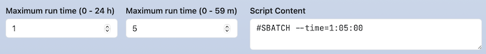
The function calc(expr[, decimalPlaces, roundingMode]) evaluates the expression expr and returns the result.
The second argument, decimalPlaces, specifies the number of digits after the decimal point. If omitted, it defaults to 0.
The third argument, roundingMode, specifies the rounding method.
One of OC_ROUNDING_ROUND (round half up), OC_ROUNDING_FLOOR (round down),
or OC_ROUNDING_CEIL (round up) can be specified. If omitted, it defaults to OC_ROUNDING_ROUND.
form:
time:
widget: number
label: [ Maximum run time (0 - 24 h), Maximum run time (0 - 59 m) ]
size: 2
value: [ 1, 10 ]
min: [ 0, 0 ]
max: [ 24, 59 ]
step: [ 1, 1 ]
script: |
#{calc(time_1 + time_2 / 60)}
#{calc(time_1 + time_2 / 60, 2)}
#{calc(time_1 + time_2 / 60, 2, OC_ROUNDING_FLOOR)}
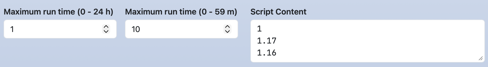
The dirname(FILE_PATH) and basename(FILE_PATH) functions extract the directory name and file name from a given path.
form:
input_file:
widget: path
label: Input file
value: /home/test/foo.txt
script: |
cd #{dirname(input_file)}
mpiexec ./#{basename(input_file)}

3. Dynamic Form Widget
You can dynamically change the settings of other widgets based on the selected option in select, radio, and checkbox widgets.
3.1. Widget setting
Sets the min, max, step, label, value, required, and help.
Specifies set-(min|max|step|label|value|required|help)-(KEY)[_(num|1st element in options)]:(VALUE) from the third element and onward of each options array.
In the following example, if you select Medium for node_type, the label and maximum value for cores will be Number of Cores (1-8) and 8.
form:
node_type:
widget: select
label: Node Type
options:
- [ Small, small ]
- [ Medium, medium, set-label-cores: Number of Cores (1-8), set-max-cores: 8 ]
- [ Large, large, set-label-cores: Number of Cores (1-16), set-max-cores: 16 ]
cores:
widget: number
label: Number of Cores (1-4)
value: 1
min: 1
max: 4
step: 1

For number, text, or email widgets with multiple input fields,
you can specify the target input field using _(num).
In the following example,
if you select GPU for node_type,
the label and maximum value of the first time input field will be Maximum run time hours (0 - 24) and 24.
form:
node_type:
widget: select
label: Node Type
options:
- [ 'Standard', '' ]
- [ 'GPU', '', set-label-time_1: Maximum run time (0 - 24h), set-max-time_1: 24 ]
time:
widget: number
label: [ Maximum run time (0 - 72 h), Maximum run time (0 - 59 m) ]
size: 2
value: [ 1, 0 ]
max: [ 72, 59 ]
min: [ 0, 0 ]
step: [ 1, 1 ]
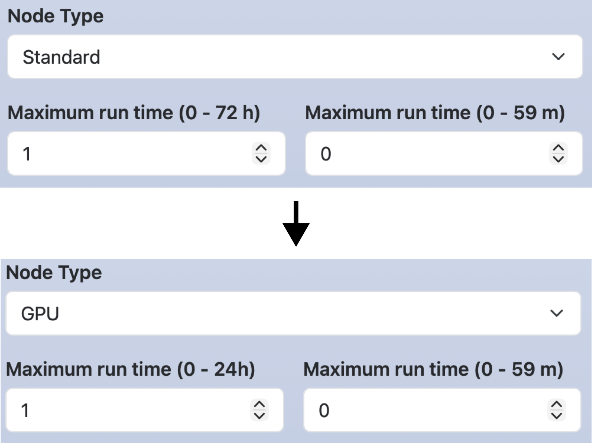
For select, radio, and checkbox widgets,
use 1st element in options to specify the target option.
In the following example, when you select GPU for node_type, Enable GPU for enable_gpu is checked.
form:
node_type:
widget: select
label: Node Type
options:
- [ 'Standard', '' ]
- [ 'GPU', '', set-value-enable_gpu: Enable GPU ]
enable_gpu:
widget: checkbox
options:
- [ Enable GPU, gpu ]
3.2. Widget disabling
Disables or enables the widget.
Specifies [disable|enable]-(KEY)[-(1st element in options)][_num] for the third element and onward of each options array.
In the following example, when Fugaku is selected for cluster,
the GPU option for node_type and the cuda_ver widget will be disabled.
If a key is disabled, its line in the script section will also be deleted.
form:
cluster:
widget: select
label: Cluster system
options:
- [ Fugaku, fugaku, disable-node_type-GPU, disable-cuda_ver ]
- [ Tsubame, tsubame ]
node_type:
widget: select
label: Node type
options:
- [ Standard, standard ]
- [ GPU, gpu ]
cuda_ver:
widget: number
label: CUDA version
value: 12
min: 12
max: 14
script: |
module load system/#{node_type}
module load cuda/#{cuda_ver}
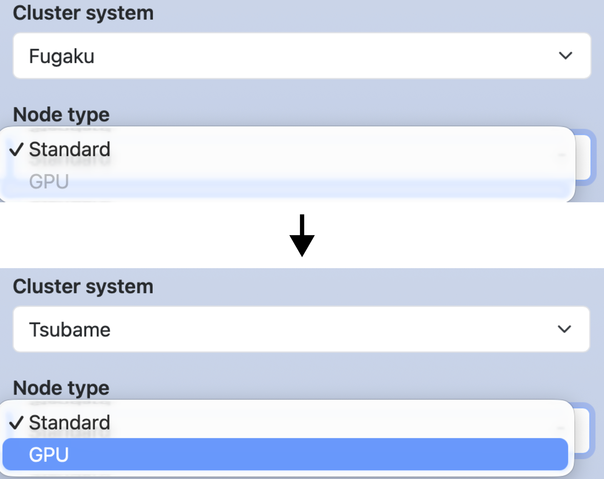
The options in the above example can also be written as shown below. In this case, node_type and cuda_ver are enabled only when Tsubame is selected.
options: - [ Fugaku, fugaku ] - [ Tsubame, tsubame, enable-node_type-GPU, enable-cuda_ver ]
3.3. Widget hiding
Hides or showes the widget.
Specifies [hide|show]-(KEY) for the third element and onward of each options array.
In the following example,
checking hide_advanced_options will hide comment.
Unlike disabling, it only hides the widget of that key, and does not affect lines in the script section.
The indent creates an indent on the left side of a web form.
You can enter a number from 1 to 5, and the higher the number, the larger the indent width.
form:
hide_advanced_option:
widget: checkbox
options:
- [ 'Hide advanced option', '', hide-comment ]
comment:
widget: text
label: Comment
value: test
indent: 1
script: |
#SBATCH --comment=#{comment}

In the following example, comment will be displayed if show_advanced_options is checked.
form:
show_advanced_options:
widget: checkbox
options:
- [ 'Show advanced option', '', show-comment ]
comment:
widget: text
label: Comment
value: test
indent: 1
script: |
#SBATCH --comment=#{comment}
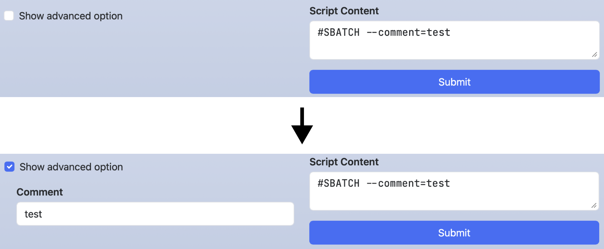
4. Available combinations
The available combinations of widgets and options in the form and header sections are shown in the table below. Only options is required, but the other items are optional.
| Widget | label, value, help, required, indent | options (Dynamic Form Widget) | size | separator | direction | min, max, step |
show_files, favorites |
|---|---|---|---|---|---|---|---|
| number | OK | OK | OK | ||||
| text, email | OK | OK | |||||
| select | OK | OK (OK) | |||||
| multi_select | OK | OK | OK | ||||
| radio | OK | OK (OK) | OK | ||||
| checkbox | OK | OK (OK) | OK | OK | |||
| path | OK | OK |
5. Script section
5.1. Change label
If you want to change the label of the job script (default is "Script Content"), set label in the script section.
In that case, write the job script in content.
form:
nodes:
widget: number
label: Number of nodes
script:
label: Script Details
content: |
#SBATCH --nodes=#{nodes}

5.2. Save file
Open Composer is capable of generating not only job scripts but also parameter and configuration files used by applications.
In such cases, it is often preferable to save the job script without submitting it.
To do so, specify action: save in the script section.
form:
nodes:
widget: number
label: Number of nodes
script:
label: Parameter file
action: save
content: |
num_of_nodes: #{nodes}
When you make this setting, the button label will change from "Submit" to "Save."

Clicking the button will save the file, and the save destination will be displayed at the top of the screen. Clicking the link will launch the Open OnDemand Home Directory. If there is a terminal icon, clicking that icon will launch the Open OnDemand Terminal application.

5.3. Hide script
You can hide your job script in the text area on the right side.
Use the special variable OC_SCRIPT_CONTENT and the hide- of the Dynamic Form Widget in the following way.
Note that the filename is form.yml.erb since it uses ERB.
form:
script_content:
widget: checkbox
value: "Hide script content"
options:
- [ "Hide script content", "", hide-<%= OC_SCRIPT_CONTENT %> ]

If you want to hide the job script without displaying the checkbox, set hide- to the checkbox itself.
form:
script_content:
widget: checkbox
value: "Hide script content"
options:
- [ "Hide script content", "", hide-<%= OC_SCRIPT_CONTENT %>, hide-script_content ]
5.4. Special variables
The following special variables are also available in the script section:
- #{OC_APP_NAME}: Application name defined in
nameofmanifest.yml - #{OC_DIR_NAME}: The name of the directory where
manifest.ymland related files are stored (the last path element of each application’s URL). - #{OC_SCRIPT_LOCATION}:
Script Locationdefined in theheadersection - #{OC_CLUSTER_NAME}:
Cluster namedefined in theheadersection (This is only available whenclusteris defined in./conf.yml.erb) - #{OC_SCRIPT_NAME}:
Script Namedefined in theheadersection - #{OC_JOB_NAME}:
Job Namedefined in theheadersection
6. Check section
Variables defined in the form section can be validated in the check section using the Ruby language and the function oc_assert(condition, message).
This function displays the specified message and terminates execution if the condition evaluates to false.
In the example below, if a total time exceeding 24 hours is entered, an error message will be shown when the "Submit" button is clicked, preventing the script from being submitted. To reference variables defined in the form section, prefix the variable name with the @ symbol.
form:
time:
widget: number
label: [ Maximum run time (0 - 24 h), Maximum run time (0 - 59 m) ]
size: 2
value: [ 1, 0 ]
min: [ 0, 0 ]
max: [ 24, 59 ]
step: [ 1, 1 ]
script: |
#SBATCH --time=#{time_1}:#{time_2}:00
check: |
message = "Exceeded Time"
oc_assert(@time_1 != 24 || @time_2 == 0, message)
In the check section, just like in the script section, the following special variables can be used:
- @OC_APP_NAME: Application name defined in
nameofmanifest.yml - @OC_DIR_NAME: The name of the directory where
manifest.ymland related files are stored (the last path element of each application’s URL). - @OC_SCRIPT_LOCATION:
Script Locationdefined in theheadersection - @OC_CLUSTER_NAME:
Cluster namedefined in theheadersection (This is only available whenclusteris defined in./conf.yml.erb) - @OC_SCRIPT_NAME:
Script Namedefined in theheadersection - @OC_JOB_NAME:
Job Namedefined in theheadersection
7. Submit section
In the submit section, you define the processing to be executed before job submission (after the validation performed in the check section) using the Bash language.
An example of the submit section is shown below.
You can use the same notation as in the script section.
Additionally, a special variable available only in the submit section, OC_SUBMIT_OPTIONS, allows you to specify additional options for the job submission command.
After this process is executed, the command to submit the job script (for example, sbatch #{OC_SUBMIT_OPTIONS} -J #{OC_JOB_NAME} #{OC_SCRIPT_NAME}) will be run.
form:
nodes:
widget: number
label: Number of nodes
submit: |
#!/bin/bash
set -e
cd #{OC_SCRIPT_LOCATION}
mv #{OC_SCRIPT_NAME} param_#{nodes}.conf
genjs_ct param_#{nodes}.conf > #{OC_SCRIPT_NAME}
OC_SUBMIT_OPTIONS="-n 1 --export=NONE"
If you want to view the commands in the submit section before submitting the job, write action: confirm.
In that case, write the details of the commands in content.
form:
nodes:
widget: number
label: Number of nodes
submit:
action: confirm
content: |
#!/bin/bash
set -e
cd #{OC_SCRIPT_LOCATION}
mv #{OC_SCRIPT_NAME} param_#{nodes}.conf
genjs_ct param_#{nodes}.conf > #{OC_SCRIPT_NAME}
OC_SUBMIT_OPTIONS="-n 1 --export=NONE"
Once you make this setting, the button label will change from "Submit" to "Confirm."
Clicking the "Confirm" button will display the commands in the submit section with values assigned to the variables.
You can also edit the contents.
Clicking the "Submit" button will execute the commands in the submit section and submit the job.
Note that if an error occurs in the script, you will need to use the set -e command to interrupt the commands.

If you also set action: save in the script section, its contents will be saved before executing the commands in the submit section.
The button at the bottom of the "Confirm" screen will change from "Submit" to "Save," as shown below.

8. Header section
You can define the header section.
However, widgets with the same names as those defined in lib/header.yml.erb must be defined.
The example below defines a new widget, script_content, that hides the job script.
The _script_location and _script are widgets defined in lib/header.yml.erb (if a cluster is defined in ./conf.yml.erb, you must also define _cluster_name).
header:
_script_location:
widget: path
value: <%= Dir.home %>
label: Script Location
show_files: false
required: true
_script:
widget: text
size : 2
label: [ Script Name, Job Name ]
value: [ job.sh, "" ]
required: [ true, false ]
script_content:
widget: checkbox
value: "Hide script content"
options:
- [ "Hide script content", "", hide-<%= OC_SCRIPT_CONTENT %> ]

Note that the example above shows how to set headers for each individual application.
If you want to configure the headers for all applications, edit lib/header.yml.erb directly.
In that case, you can use the special variables shown below, just like in the script section (These variables can also be used in the header and form sections, but in that case, the file name must be form.yml.erb.)
- @OC_APP_NAME: Application name defined in
nameofmanifest.yml - @OC_DIR_NAME: The name of the directory where
manifest.ymland related files are stored (the last path element of each application’s URL).
Below is an example showing how to change the processing for only a specific application.
<% if @OC_DIR_NAME == "Slurm" %>
queue:
widget: select
label: Queue
options:
- [small]
- [large]
<% end %>
9. Sample
The sample applications are as follows:
- https://github.com/RIKEN-RCCS/OpenComposer/tree/main/sample_apps
- https://github.com/RIKEN-RCCS/composer_fugaku
- https://github.com/RIKEN-RCCS/composer_rccs_cloud
10. Supplement
- All the samples on this page are written in the Bash language, but you can use other shells as well. However, the
submitsection can only be written in the Bash language. - Widget names can only contain alphanumeric characters and underscores. Numbers and underscores cannot start the name. Please also avoid using widget names that end with an underscore followed by a number (e.g.,
nodes_1). The same rule applies to the directory name in which the application is saved. However, when defining theheadersection inform.yml, the widget names beginning with underscores (e.g._script_location) used inlib/header.yml.erbcan be used. - If there is no second element in
options, the first element is used instead. - In the
scriptsection, if a variable used in a line does not have a value, the line is not displayed. However, if you add a colon to the beginning of the variable (e.g.#{:nodes}or#{basename(:input_file)}), the line will be output even if the variable does not have a value. - The order of processing that Open Composer performs before submitting a job script is as follows.
- The "Submit" button is clicked in the application page
- Execute the script written in the
checksection inform.yml(if thechecksection exists) - Execute the script written in the
submitsection inform.yml(if thesubmitsection exists) - Submit the job script
- When developing Open Composer with general user privileges, it is recommended to run Open Composer in development mode. When an error occurs, its cause will be displayed in the web browser. Please edit
./run.rbas follows.#set :environment, :production set :environment, :development